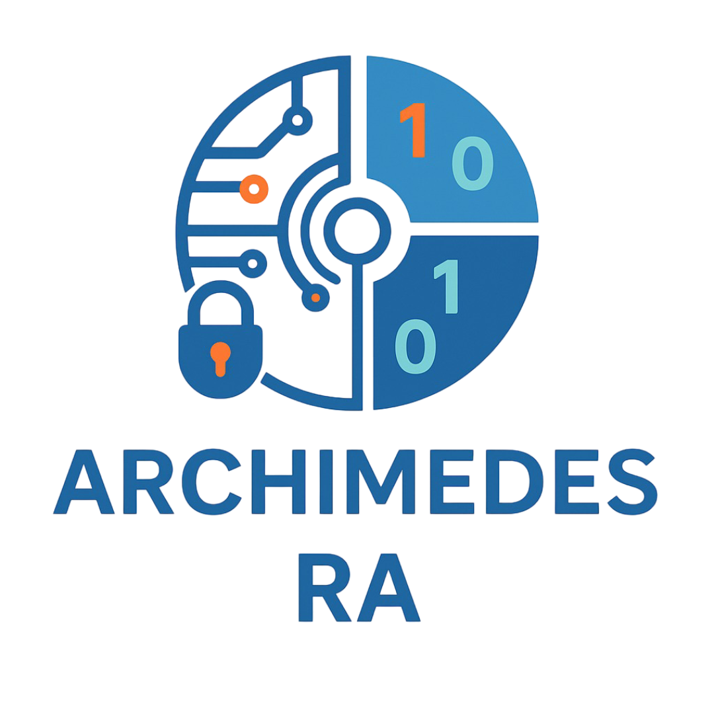

Welcome to the Archimedes Reference Architecture Portal

Explore comprehensive reference architectures, practical implementations, and interactive demos designed to accelerate your automated Archimedes Solution development.
Data Stream
Discover how data streaming powers to fetch all the information related to your testers.
UltraEdge
Explore architectures related to the UltraEdge. This will guide you on the way to communicate with an UltraEdge
Test Program Interactions
Adaptive tests, Rebin, gives you the opportunity to connect to your test program with or without UltraEdge.
Use Cases
Browse practical implementations and scenarios showing how Archimedes accelerates how to unleash the power of Archimedes.
Supplementary
Additional topics, tips, and resources to enhance your Archimedes experience.
Artificial Intelligence
Explore AI-powered features and machine learning integrations for intelligent test automation.
History
History about this web site